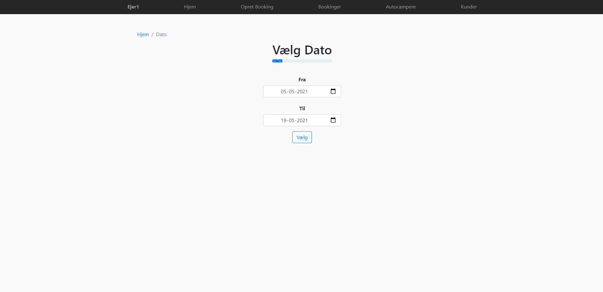
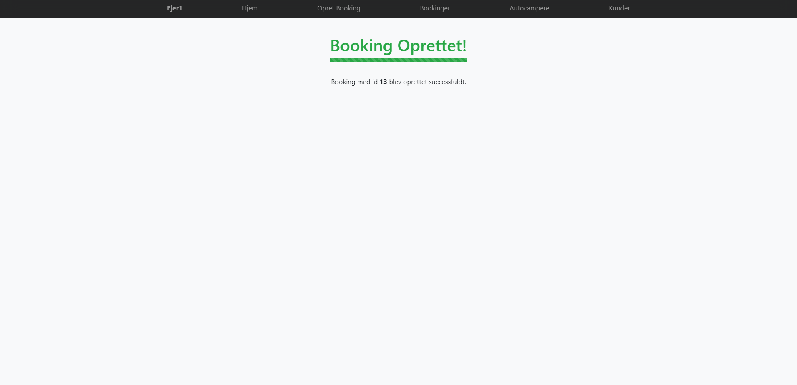
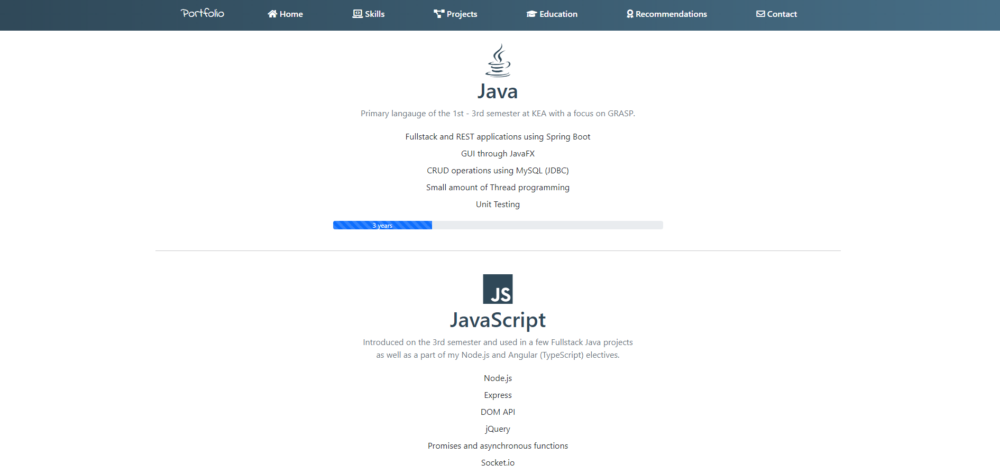

<link rel="stylesheet" href="../frontpage/frontpage.css">
<script src="anijs-min.js"></script>

<header class="masthead text-center bg-light">
    <div class="overlay">
        <div class="container p-4">
            <div class="row justify-content-center">
                <div class="col-2 d-flex align-items-center">
                    
                </div>
                <div class="col-7">
                    <div class="introduction text-start">
                        <h1 class="blue-header">MADS KJÆRGAARD CHRISTENSEN</h1>
                        <div class="subheading mb-4">
                            Axel Heides Gade 6 · 2300 KBH S · 30 23 43 83 · <a href="/contact">m.kjaergaard.christensen@gmail.com</a>
                        </div>
                        <p id="lead" class="mb-5 text-break">
                            I have always had an interest in everything computers and am currently studying Computer Science on my 4th semester at KEA.
                            I was introduced to programming through Java and have mainly followed the OOP paradigm.
                            However I am also acquainted with functional programming through Node.js and Python.
                        </p>
                    </div>
                </div>
            </div>
        </div>
    </div>
</header>
<section class="skills">
    <div class="container text-center pt-4">
        <div class="row">
            <div class="col">
                <h2 class="blue-header">Programming Languages & Tools</h2>
                <div class="d-flex justify-content-center">
                    <ul id="skills" class="list-inline d-flex align-items-center">

                    </ul>
                </div>
            </div>
        </div>
    </div>
</section>

<section class="projects">
    <div class="container text-center pt-4">
        <div class="row">
            <div class="col">
                <h2 class="blue-header">Projects</h2>
                <div id="carousel-container" class="d-flex justify-content-center">
                    <div id="carouselProjects" class="carousel slide w-50" data-bs-ride="carousel">
                        <div id="carousel-inner" class="carousel-inner">
                            <div class="carousel-item active">
                                <a href="/projects#nordicMotorHome">
                                
                                </a>
                            </div>
                            <div class="carousel-item">
                                <a href="/projects#nordicMotorHome">
                                
                                </a>
                            </div>
                            <div class="carousel-item">
                                <a href="/projects#nodefolio">
                                
                                </a>
                            </div>
                        </div>
                        <button class="carousel-control-prev" type="button" data-bs-target="#carouselProjects" data-bs-slide="prev">
                            <span class="carousel-control-prev-icon" aria-hidden="true"></span>
                            <span class="visually-hidden">Previous</span>
                        </button>
                        <button class="carousel-control-next" type="button" data-bs-target="#carouselProjects" data-bs-slide="next">
                            <span class="carousel-control-next-icon" aria-hidden="true"></span>
                            <span class="visually-hidden">Next</span>
                        </button>
                    </div>
                </div>
            </div>
        </div>
    </div>
</section>
<script src="../frontpage/frontpage.js"></script>
